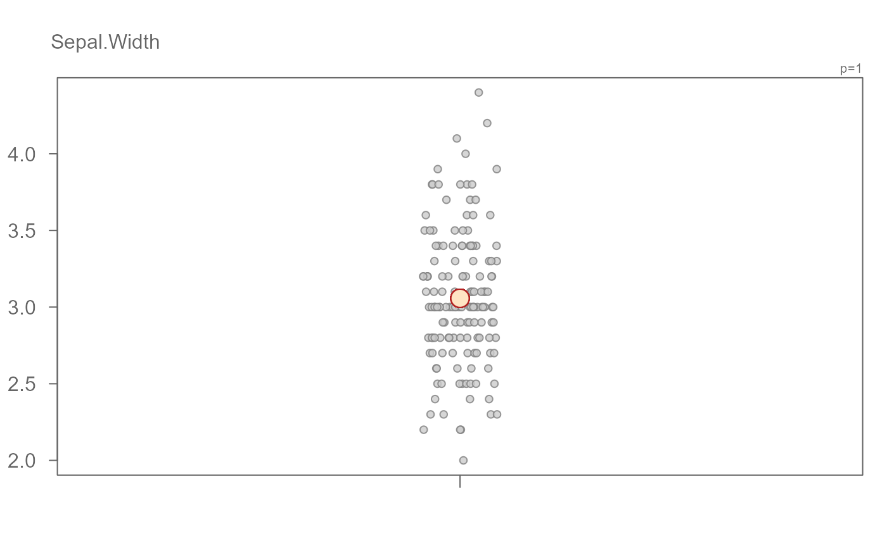
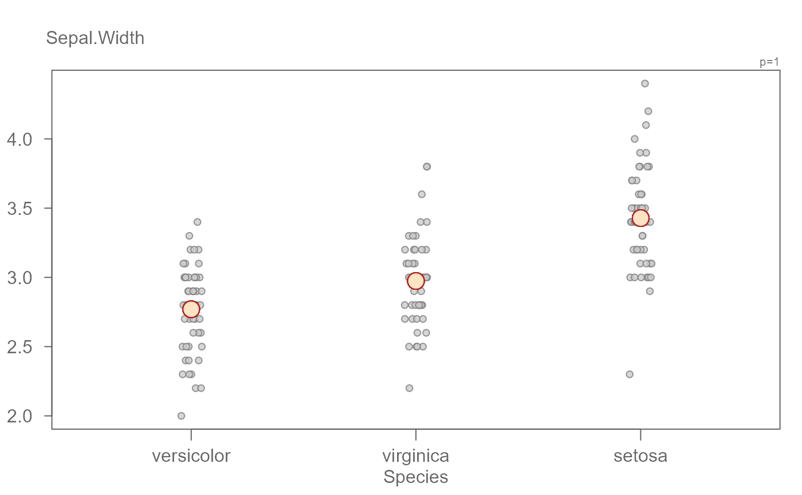
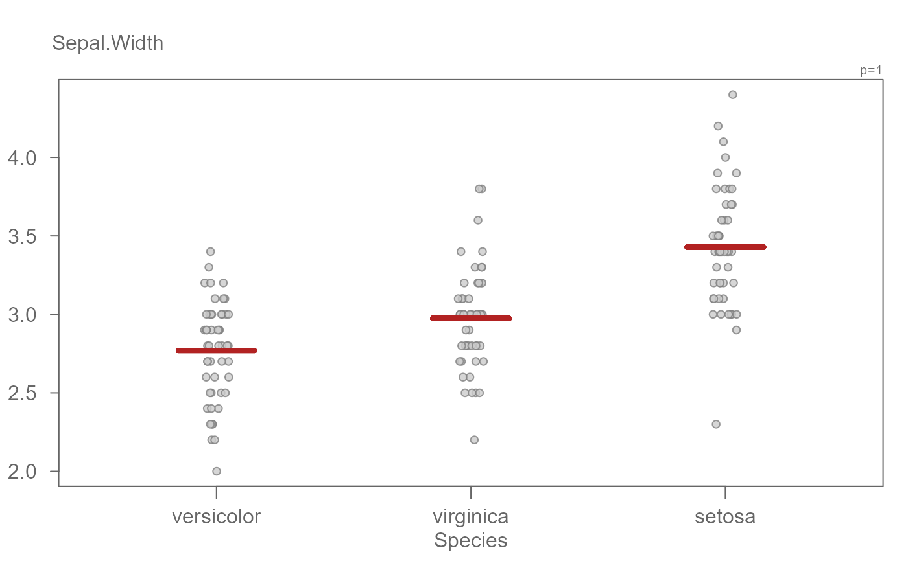

eda_jitter creates jitter plot conditioned on one variable.
Usage
eda_jitter(
dat,
x,
fac = NULL,
jitter = 0.05,
p = 1,
tukey = FALSE,
horiz = FALSE,
stat = mean,
show.stat = TRUE,
stat.type = "p",
stat.col = "firebrick",
stat.fill = "bisque",
stat.size = 2,
stat.pch = 21,
stat.pad = 1,
xlab = NULL,
ylab = NULL,
grey = 0.6,
pch = 21,
p.col = "grey50",
p.fill = "grey80",
size = 0.8,
alpha = 0.8,
reorder = TRUE,
show.par = TRUE,
ylim = NULL
)Arguments
- dat
Data frame
- x
Column name assigned to the values
- fac
Column name assigned to the factor the values are to be conditioned on
- jitter
Jittering parameter. A fraction of the group width (
0to1)- p
Power transformation to apply to variable
- tukey
Boolean determining if a Tukey transformation should be adopted (FALSE adopts a Box-Cox transformation)
- horiz
plot horizontally (TRUE) or vertically (FALSE)
- stat
Choice of summary statistic to use when centering the fitted values around 0.
statcan be eithermeanormedian. DO NOT wrap stat parameter in quotes.- show.stat
Boolean determining if a summary statistic of the batches should be shown.
- stat.type
Symbol to use to display statistical summary. Can be either a point,
"p", or a line,"l".- stat.col
Symbol color to use to display statistical summary. If
stat.typeis a point, then the color will be passed to its outline if the point symbol type is 21 through 25.- stat.fill
Fill color to use for the point statistical summary if point symbol type is 21 through 25. Ignored if
stat.type = "l".- stat.size
Size of point statistical summary if
stat.type = "p", or width of line ifstat.type = "l".- stat.pch
Point statistical summary type (1 through 25). Ignored if
stat.type = "l".- stat.pad
Fraction to add to the length of the line statistical summary, Ignore if
stat.type = "p".- xlab
X label for output plot
- ylab
Y label for output plot
- grey
Grey level to apply to plot elements (0 to 1 with 1 = black)
- pch
Point symbol type
- p.col
Color for point symbol
- p.fill
Point fill color passed to
bg(Only used forpchranging from 21-25).- size
Point size (0-1).
- alpha
Point transparency (0 = transparent, 1 = opaque). Only applicable if
rgb()is not used to define point colors.- reorder
Boolean determining if factors have to be reordered based on
stat.- show.par
Boolean determining if power transformation should be displayed in the plot.
- ylim
Define custom y axis limits (x limits if
horiz=TRUE.
Details
Function generates jitter plot from a univariate dataset. If no categorical
variable is passed to the function, a single jitter plot is created from the
data.
By default, the plots are ordered based on the statistic, stat, used to generate
the central value.
Examples
# A basic jitter plot for a single variable where the mean is automatically
# fitted to the data
eda_jitter(iris, Sepal.Width)

# A basic jitter plot conditioned on a categorical variable
eda_jitter(iris, Sepal.Width, Species)

# Use line instead of point for summary statistic
eda_jitter(iris, Sepal.Width, Species, stat.type = "l")

# You can apply a transformation to the data. The summary statistic will be
# computed after the data are transformed.
eda_jitter(mtcars, hp, cyl, p = 0)